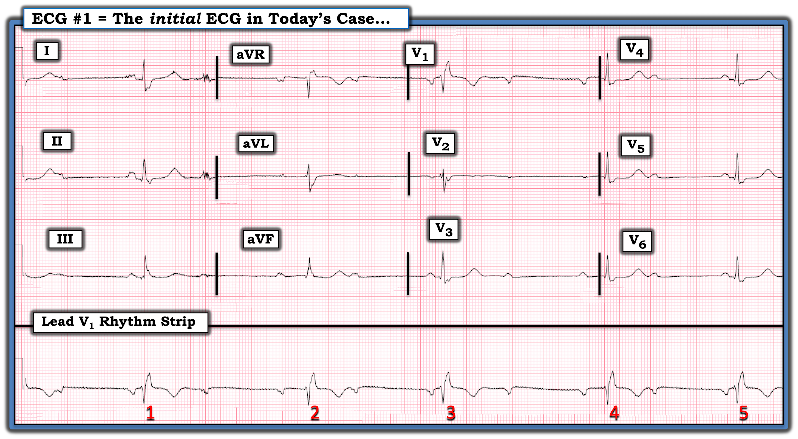
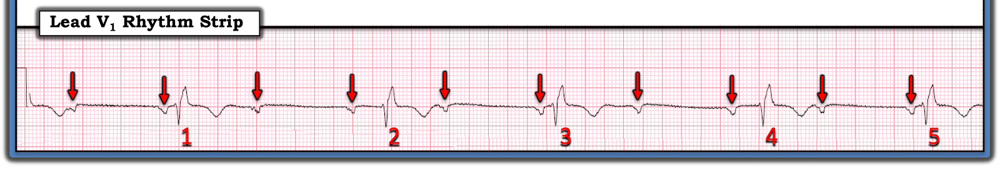
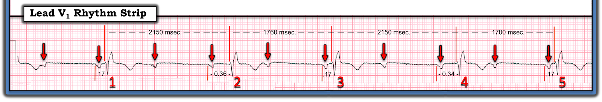
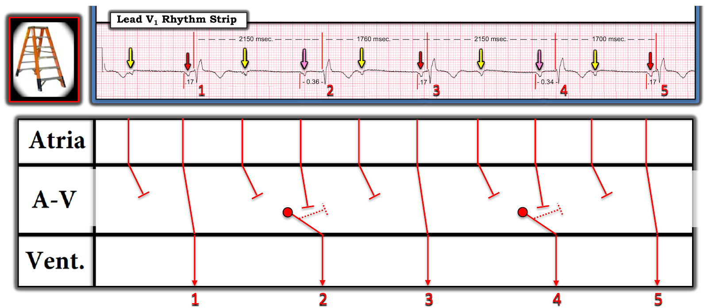
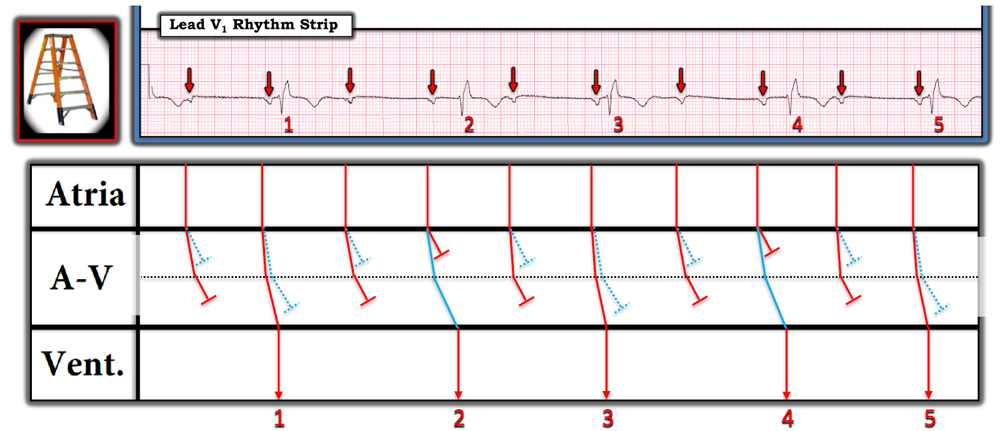

ECG Blog #399 — Giản đồ bậc thang nào đúng?
Điện tâm đồ ở Hình 1 được ghi từ một phụ nữ ngoài 60 tuổi — được khám tại ED (Khoa Cấp cứu — Emergency Department) trong quá trình đánh giá chấn thương sau một tai nạn xe cơ giới. Bệnh nhân ổn định huyết động — và không đau ngực, choáng váng hay ngất.
CÂU HỎI:
- Bạn sẽ diễn giải nhịp ở Hình 1 NHƯ THẾ NÀO?
- Đây có phải là blốc AV "mức độ cao" không?
- Có cần đặt máy tạo nhịp không?


SUY NGHĨ CỦA TÔI về điện tâm đồ ở Hình 1:
Tôi thường bắt đầu đánh giá mỗi điện tâm đồ 12 chuyển đạo mà tôi gặp — bằng việc diễn giải nhịp. Để làm điều này — tôi áp dụng Cách tiếp cận Ps, Qs, 3R (Xem ECG Blog #185 — để ôn lại hệ thống của tôi).
- Dải nhịp chuyển đạo dài ở cuối điện tâm đồ 12 chuyển đạo ở Hình 1 — cho thấy một nhịp rất chậm và không đều, dù 5 nhát mà ta thấy dường như biểu hiện nhịp theo nhóm (group beating)!
- Phức bộ QRS rộng — nhưng với hình dạng rất điển hình của dẫn truyền RBBB (Right Bundle Branch Block — blốc nhánh phải) (tức là, hình ảnh rSR' ba pha điển hình ở chuyển đạo V1 — với sóng S tận rộng ở các chuyển đạo bên).
- Sóng P có hiện diện — với vẻ như có một số khoảng PR lặp lại, gợi ý rằng có ít nhất một phần sóng P được dẫn truyền!
ĐIỂM THEN CHỐT (PEARL) #1: Sau khi xem xét 5 Thông số MẤU CHỐT — bước tiếp theo DỄ NHẤT để xác định cơ chế của một nhịp phức tạp — là đánh dấu các sóng P. Tôi làm điều này bằng các mũi tên ĐỎ ở Hình 2.
- Khi các sóng P đã được đánh dấu — Chẳng phải bây giờ dễ nhận ra hơn nhiều rằng nhịp nhĩ khá đều (chỉ có loạn nhịp xoang nhẹ) sao?
CÂU HỎI:
- Các khoảng PR trước các nhát #1, 3 và 5 có bằng nhau không?
- Còn các khoảng PR trước các nhát #2 và 4 thì sao?
- Điểm MẤU CHỐT: Vì sao câu trả lời cho các câu hỏi này lại quan trọng để xác định cơ chế của nhịp hôm nay?
- GỢI Ý: Trừ khi bạn dùng compa đo (calipers) — Nhiều khả năng bạn sẽ trả lời sai ít nhất một trong các câu hỏi trên!


ĐIỂM THEN CHỐT (PEARL) #2: Lý do quan trọng phải xác định XEM có khoảng PR nào lặp lại hay không — là vì nếu có, thì rất có khả năng những nhát đó là nhát dẫn truyền từ xoang.
- Ở Hình 3 — tôi đã đo rất cẩn thận các khoảng PR và các khoảng R-R của 5 nhát trong bản ghi hôm nay. Lưu ý rằng các khoảng PR đứng trước các nhát #1, 3 và 5 đều bình thường và bằng nhau (tức là, = 0.17 giây). Điều này gợi ý mạnh rằng 3 nhát này là nhát dẫn truyền từ xoang, dù có RBBB.
- LƯU Ý: Trước khi dùng compa để đo — tôi đã nghĩ rằng các khoảng PR trước các nhát #2 và 4 cũng bằng nhau. Tuy nhiên, như thấy ở Hình 3 — có một khác biệt nhỏ-nhưng-thật giữa khoảng PR trước nhát #2 ( = 0.36 giây) — so với khoảng PR trước nhát #4 ( = 0.34 giây).
ĐIỂM THEN CHỐT (PEARL) #3: Việc các khoảng PR trước nhát #2 và nhát #4 không bằng nhau — khiến ít khả năng hơn (dù không phải là không thể) rằng 2 nhát này là nhát dẫn truyền từ xoang.
- LƯU Ý: Mặc dù các khoảng PR trước các nhát #2 và #4 không bằng nhau — các khoảng R-R đứng trước 2 nhát này lại bằng nhau chính xác! ( = 2150 msec.). Điều này khó là do ngẫu nhiên — và, tôi tin rằng nó gợi ý mạnh rằng các nhát #2 và #4 là nhát thoát (escape).
ĐIỂM THEN CHỐT (PEARL) #4: Nếu các nhát #2 và #4 thực sự là nhát "thoát" — việc hình dạng QRS của các nhát này giống hệt hình dạng QRS của các nhát dẫn truyền từ xoang #1,3,5 cho ta biết rằng vị trí thoát nằm trong hệ thống dẫn truyền thất (tức là, xuất phát hoặc từ Nút AV hoặc từ Bó His).
- Việc khoảng R-R đứng trước các nhát #2 và #4 dài hơn 10 ô lớn trên giấy ghi điện tâm đồ (tức là, tương ứng với tần số hơi dưới 30/phút) — gợi ý rằng vị trí thoát có lẽ nằm dưới Nút AV (vì tần số "thoát" bộ nối thông thường sẽ nhanh hơn, điển hình khoảng ~40-60/phút).


=====================================
Tổng hợp lại tất cả:
Cơ chế chính xác của rối loạn nhịp hôm nay rất phức tạp và khó xác định. Với những ai đặc biệt quan tâm đến rối loạn nhịp tim — HÃY ĐỌC TIẾP! — khi tôi khảo sát cơ chế có khả năng của nhịp hôm nay bằng các giản đồ bậc thang (laddergram) dưới đây.
Với những ai ít quan tâm hơn đến các rối loạn nhịp tim phức tạp:
- Điểm MẤU CHỐT: Chúng ta đã giải quyết các yếu tố then chốt của ca hôm nay cần thiết để quyết định xử trí lâm sàng phù hợp. Kể cả khi dừng ở đây — Chúng ta có thể kết luận như sau:
- Có nhịp chậm rõ rệt ở nhịp hôm nay (tức là, tần số tim khoảng hơn 30 một chút). Số sóng P cũng gấp đôi số phức bộ QRS — nên ít nhất là có blốc AV độ 2. Vì vậy — NẾU không tìm ra nguyên nhân "có thể khắc phục được" (tức là, thiếu máu cục bộ/nhồi máu — rối loạn điện giải — thuốc làm chậm tần số) — thì do blốc AV và tần số tim rất chậm, bệnh nhân này có lẽ sẽ cần máy tạo nhịp.
- Xét Bệnh sử của ca hôm nay (tức là, chấn thương sau tai nạn xe cơ giới) — cần đặc biệt chú ý thăm khám lâm sàng để loại trừ khả năng đụng dập tim là nguyên nhân gây rối loạn dẫn truyền (RBBB, blốc AV và nhịp chậm nằm trong số các rối loạn hay gặp hơn ở bệnh nhân đụng dập tim — theo Bình luận của tôi ở cuối trang trong bài ngày 6 tháng 8 năm 2022 trên Dr. Smith's ECG Blog).
- Tuy nhiên — NẾU không có dấu hiệu chấn thương ngực từ tai nạn xe cơ giới của bệnh nhân này — thì hình ảnh đoạn ST dẹt không đặc hiệu thấy ở nhiều chuyển đạo, cùng ST chênh lên nhẹ ở các chuyển đạo aVR và V1 — có thể phản ánh thiếu máu cục bộ dưới nội tâm mạc lan tỏa do bệnh mạch vành nền đã lâu, như một nguyên nhân tiềm tàng của các rối loạn dẫn truyền ở bệnh nhân này.
- Cuối cùng — Nếu bệnh nhân hôm nay không có bệnh mạch vành nền đáng kể — thì nhịp chậm kèm blốc AV của bà có thể là hậu quả của SSS (hội chứng suy nút xoang — Sick Sinus Syndrome).
- Rõ ràng sẽ cần đối chiếu lâm sàng để làm sáng tỏ tất cả những điều này.
=====================================
Xem KỸ HƠN nhịp hôm nay:
Việc giải thích thêm về nhịp hôm nay có lẽ được thực hiện tốt nhất bằng một Giản đồ bậc thang (laddergram).
- Tôi thiên hẳn về giản đồ bậc thang minh họa ở Hình 4 — như lời giải thích hợp lý nhất cho nhịp hôm nay.
- Dù vậy, các rối loạn nhịp phức tạp thường khơi gợi thảo luận và việc cân nhắc nhiều hơn một cơ chế — đó là lý do tôi đưa ra một cơ chế thay thế (dù ít khả năng hơn) cho nhịp hôm nay ở Hình 5.


Giải thích giản đồ bậc thang ở Hình 4:
Với những ai muốn ôn lại cách đọc và/hoặc vẽ giản đồ bậc thang — Xin xem ECG Blog #188 của tôi. Về ca hôm nay — lời giải thích của tôi cho giản đồ bậc thang ở Hình 4 như sau:
- Những gì chúng ta BIẾT: Các nhát #1, 3 và 5 là nhát dẫn truyền từ xoang vì (như đã nêu ở trên) — khoảng PR trước mỗi nhát này giống hệt nhau và có thời gian hợp lý cho dẫn truyền bình thường ( = 0.17 giây — đối với khoảng PR giữa mỗi mũi tên ĐỎ và QRS kế cận).
- LƯU Ý: Các MŨI TÊN màu ở Hình 4 biểu thị sóng P xoang. Có sự không đều nhẹ trong thời điểm xuất hiện của các sóng P này (có thể thấy qua sự không đều nhẹ của các đường thẳng đứng biểu thị sự lan truyền xung động qua Tầng Nhĩ). Điều này phù hợp với loạn nhịp xoang nhẹ.
- ĐIỂM THEN CHỐT (PEARL) #5: Có thể DỄ bỏ sót việc nhịp sóng P không đều — NẾU không dùng compa đo. Việc có loạn nhịp xoang nhẹ có ý nghĩa lâm sàng đối với cơ chế của nhịp hôm nay — vì nó giải thích sự thay đổi các khoảng R-R mà ta thấy giữa các nhát dẫn truyền từ xoang #2-3 ( = 1760 msec.) — và giữa các nhát #4-5 ( = 1700 msec.). Nó cũng giải thích sự khác biệt khoảng PR trước các nhát #2 và #4 — mà tôi tin là Manh mối MẤU CHỐT cho nguyên nhân có khả năng của rối loạn nhịp hôm nay! (tức là, 0.36 ≠ 0.34 giây! — như ở PEARL #3).
- ĐIỂM THEN CHỐT (PEARL) #6: “Chiến lược” của tôi về trình tự vẽ một giản đồ bậc thang — là vẽ trước những yếu tố của nhịp có nhiều khả năng đúng nhất. Ở Hình 4 — tôi cho rằng gần như chắc chắn không sóng P nào có mũi tên VÀNG được dẫn truyền xuống thất (đó là lý do tôi vẽ các đầu cụt ở Tầng Nút AV để biểu thị các xung động này không được dẫn xuống thất).
- ĐIỂM THEN CHỐT (PEARL) #7: Lưu ý rằng chúng ta vừa xác lập được có một dạng nào đó của blốc AV độ 2 ở Hình 4 — vì mặc dù có thừa “cơ hội” để dẫn truyền, không sóng P nào có mũi tên VÀNG được dẫn truyền xuống thất (vì không sóng P mũi tên VÀNG nào xuất hiện gần một phức bộ QRS ở vị trí có cơ hội hợp lý để được dẫn truyền).
- Như vậy tôi chỉ còn phải giải thích đường đi cuối cùng của các sóng P có mũi tên HỒNG. Như đã nhấn mạnh ở trên trong PEARLS #3 và #4 — việc mặc dù có khác biệt nhỏ-nhưng-thật giữa các khoảng PR trước các nhát #2 và #4 — các khoảng R-R trước các nhát #2 và #4 lại bằng nhau chính xác ( = 2150 msec.). Điều này gợi ý mạnh rằng các nhát #2 và #4 là nhát thoát (escape) (tức là, trước khi các sóng P HỒNG này có cơ hội dẫn truyền — các nhát thoát phát sinh hoặc từ Nút AV, hoặc nhiều khả năng hơn là từ bó His, đã chấm dứt các khoảng ngưng trong nhịp giữa các nhát #1-2 và giữa các nhát #3-4).
- LƯU Ý: Chúng ta không biết LIỆU các sóng P mũi tên HỒNG có được dẫn truyền hay không nếu các nhát thoát #2 và #4 không xảy ra.
- ĐIỂM THEN CHỐT (PEARL) #8: Nói chung, tôi dành thuật ngữ "blốc AV mức độ cao" (high-grade) cho trường hợp có từ 2 sóng P liên tiếp trở lên lẽ ra phải được dẫn truyền nhưng lại không được dẫn. Về mặt kỹ thuật, giản đồ bậc thang ở Hình 4 không thỏa định nghĩa này — vì sự xuất hiện của các nhát thoát #2 và #4 khiến chúng ta không thể biết liệu các sóng P mũi tên HỒNG có thể đã được dẫn truyền với khoảng PR kéo dài nếu có cơ hội hay không.
- Dù vậy, sự phân biệt về mặt ngữ nghĩa này không quan trọng về lâm sàng — vì bất kể định nghĩa blốc AV "mức độ cao" có được thỏa hay không — các rối loạn dẫn truyền phối hợp gồm nhịp chậm rõ rệt, với blốc AV ít nhất 2:1 cộng với RBBB — sẽ đáp ứng chỉ định tạo nhịp NẾU không tìm ra nguyên nhân "có thể khắc phục được".
=====================================
Giả thuyết thứ 2 = Đường dẫn truyền kép trong nút AV:
Khi mới nhìn thấy bản ghi hôm nay — tôi lập tức nghi ngờ rằng cơ chế của rối loạn nhịp này sẽ là hậu quả của đường dẫn truyền kép trong nút AV vì: i) Dường như có nhịp theo nhóm, gợi ý Wenckebach AV; và, ii) Dường như có 2 "họ" khoảng PR lặp lại — với một "bước nhảy" khoảng PR lớn giữa các khoảng PR ngắn hơn (tức là, trước các nhát #1,3,5) — và các khoảng PR dài hơn (tức là, trước các nhát #2,4).
- Sự hiện diện của 2 đường dẫn truyền hoạt động trong nút AV, mỗi đường có khoảng PR và khả năng dẫn truyền riêng — là một lời giải thích hợp lý cho việc đôi khi ta thấy khác biệt lớn giữa khoảng PR của 2 họ nhát được dẫn truyền.
- Tôi minh họa sơ đồ cơ chế này ở Hình 5 — trong đó các đường ĐỎ trong Tầng Nút AV biểu thị dẫn truyền qua đường nhanh hơn trong nút AV (với các khoảng PR ngắn hơn trước các nhát #1,3,5).
- Các đường XANH trong Tầng Nút AV biểu thị dẫn truyền qua đường chậm hơn trong nút AV (với các khoảng PR dài hơn trước các nhát #2 và 4).
- Cả hai đường dẫn truyền trong nút AV đều bị blốc đối với những sóng P không có phức bộ QRS nào theo sau.
- Lý do ta thấy một "bước nhảy" lớn về chênh lệch khoảng PR trước các nhát #1 và 2 — và trước các nhát #3 và 4 — là do đường nhanh hơn bị blốc từng lúc, khiến các sóng P trước các nhát #2 và 4 được dẫn truyền qua đường chậm hơn (với khoảng PR dài hơn).
- Vấn đề của Hình 5: Như tôi đã nêu ở trên — các số đo bằng compa cho thấy các khoảng PR trước các nhát #2 và 4 không bằng nhau (tức là, 0.36 so với 0.34 giây — như thấy ở Hình 3). Dù không phải không thể để đường chậm hơn trong nút AV dẫn truyền với các khoảng PR hơi khác nhau — tôi cho rằng điều này ít khả năng hơn nhiều so với cơ chế đề xuất ở Hình 4, trong đó các nhát #2 và 4 là nhát thoát.


==================================
Lời cảm ơn: Xin cảm ơn Sam Ghali (từ Jacksonville, Florida — @EM_RESUS) đã chia sẻ ca bệnh và bản ghi này.
==================================
Các bài ECG Blog liên quan đến ca hôm nay:
- ECG Blog #205 — Ôn lại Cách tiếp cận hệ thống của tôi trong đọc điện tâm đồ 12 chuyển đạo.
- ECG Blog #185 — Ôn lại Cách tiếp cận Ps, Qs, 3R trong diễn giải nhịp.
- ECG Blog #188 — Ôn lại cách đọc và vẽ giản đồ bậc thang (kèm LINK tới hơn 90 ca có giản đồ bậc thang — nhiều ca có minh họa tuần tự từng bước).
- ECG Blog #192 — 3 Nguyên nhân gây phân ly nhĩ thất.
- ECG Blog #191 — Ôn lại sự khác biệt giữa phân ly nhĩ thất và blốc AV hoàn toàn.
- ECG Blog #389 — ECG Blog #373 — và ECG Blog #344 — để ôn lại một số ca minh họa "giải quyết vấn đề blốc AV".
- ECG Blog #186 — Nhấn mạnh tầm quan trọng của nhịp theo nhóm (group beating) — và ôn lại khi nào nên nghi ngờ blốc AV độ 2 dạng Mobitz I ( = Wenckebach AV).
- ECG Blog #251 — Ôn lại các khái niệm tính chu kỳ Wenckebach và "Dấu chân" của Wenckebach (Xin nghe Audio Pearl trong bài này, tập trung vào các khái niệm đó).
- ECG Blog #164 — Ôn lại một ca blốc AV độ 2 Mobitz I (điển hình — kèm bàn luận chi tiết về "Dấu chân" của Wenckebach).
- ECG Blog #259 — và ECG Blog #347 – Ôn lại khái niệm Blốc AV hai tầng.
- Bài ngày 25 tháng 10 năm 2021 trên Dr. Smith's ECG Blog — Bình luận của tôi (ở cuối trang) trình bày cách tiếp cận của tôi với một ca khác về blốc Wenckebach hai tầng.
- ECG Blog #226 — Phân tích từng bước một Ca lâm sàng phức tạp về blốc AV hai tầng.
- ECG Blog #243 — Ôn lại một ca cuồng nhĩ với Wenckebach hai tầng ra khỏi Nút AV.
- ECG Blog #267 — Ôn lại một ca có đường dẫn truyền kép trong nút AV.
==================================

PHẦN BỔ SUNG (14/10/2023):

ECG Video (Media PEARL #52) dài 15 phút này — Ôn lại 3 Loại blốc AV độ 2 — cùng với — thuật ngữ khó định nghĩa blốc AV "mức độ cao". Tôi bổ sung nội dung này bằng 2 tài liệu phát tay dạng PDF sau đây.
- Phần 2F (6 trang = Câu trả lời "ngắn") trong cuốn ECG-2014 Pocket Brain của tôi cung cấp phần ôn tập nhanh bằng văn bản về các blốc AV (Tải miễn phí).
- Phần 20 (54 trang = Câu trả lời "dài") trong cuốn ACLS-2013-Arrhythmias bản Mở rộng của tôi cung cấp phần bàn luận chi tiết về việc các blốc AV LÀ GÌ — và không phải là gì! (Tải miễn phí).
- ECG Media Pearl #4 (Audio 4:30 phút) — Các blốc AV & Khi nào nên nghi ngờ Mobitz I — Xem ECG Blog #186 —